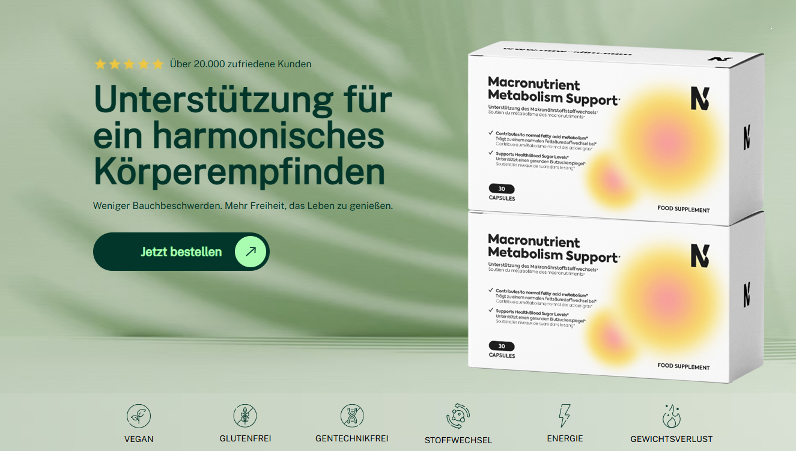

Der Wahnsinns-Deal: jeder in der Jury von „Die Höhle“ unterstützt dieses Produkt!
Ein Bericht von Ella Schmitz |
( - Es war die beliebteste Folge der neuen Staffel von „Die Höhle der Löwen“ – die beiden Brüder konnten mit ihrem einzigartigen Produkt die gesamte Jury überzeugen.)
Noch nie zuvor hat sich die gesamte Jury der „Höhle“ unabhängig voneinander dazu entschlossen Millionen von Euros in ein einziges Produkt zu investieren.
Nachdem die Jury unglaubliche 25% an Anteilen der Firma der Brüder gekauft hatte, halfen sie den beiden Brüdern persönlich ein re-branding und ein re-packing ihres Wunderproduktes vorzunehmen.
Die Brüder hatten ein großartiges Produkt, jedoch hatten sie Probleme mit dem Marketing. Die beiden Brüder, die über Nacht berühmt wurden, haben ein Studium in der Ernährungswissenschaft sowie Sportmedizin hinter sich. Die Investoren erkannten sofort, dass es sich um ein großartiges Produkt handelt und die Brüder "nur" Hilfe bei der Vermarktung benötigten.
Ihr Produkt priesen die beiden Brüdern als „größten Schritt in der Geschichte des Gewichtsabnehmens“. Die Investoren waren zuerst skeptisch, jedoch konnten die beiden Brüdern die Effektivität ihres Produkts mit wissenschaftlichen Studien belegen.

Auch auf den sozialen Medien Instagram und Tiktok sind die "rosa WunderGummibärchen" beliebt. Tausende Videos gibt es dort bereits über das Produkt.
„Wir waren geschockt. Wir hatten eigentlich nur damit gerechnet ein paar Tipps zur Vermarktung zu bekommen. Wir waren uns nicht mal sicher, ob wir überhaupt einen einzigen Investor für uns gewinnen könnten.“, sagte Jonathan in der Folge.
Nach ganzen 5 Angeboten der einzelnen Investoren waren die beiden Brüder sichtlich geschockt.
„Es fühlte sich nicht echt an. Vor uns saßen die erfolgreichsten Unternehmer Deutschlands. Und diese wollten unbedingt ein Teil von unserem Projekt sein. Ich glaube wir haben unser Produkt die ganze Zeit unterschätzt. Es war unglaublich und sehr emotional für uns!“ erklärt Andreas.
Die Brüder sind die ersten Teilnehmer in der langen Laufzeit der Show, die Standing Ovations und Investitionen von allen Jury-Mitgliedern erhielten. Das Leben der beiden hat sich über Nacht schlagartig geändert.
Seit dem diese unglaubliche Folge aufgezeichnet wurde sind die beiden
Brüder hart am Arbeiten und nutzen die Tipps ihrer Investoren.
Klinische Versuche von den Now Slim Gummibärchen haben beweisen können, dass Testpersonen die dieses Produkt nutzen ihren Fettanteil drastisch reduzieren konnten und das dies auch, bei weiterer Nutzung, so bleibt.
Klinische Studien mit insgesamt 1800 Teilnehmern, die die Wirkung von dem Produkt beweisen, konnnten die Löwen letztendlich überzeugen.
In einer kürzlich durchgeführten klinischen Studie mit über 500 Teilnehmern zeigte sich, dass diejenigen, die regelmäßig Now Slim einnahmen, im Durchschnitt 7,5 Kilogramm mehr Gewicht pro Monat verloren als die Teilnehmer in der Kontrollgruppe.
Auch in Dänemark haben die Studien zu Now Slim großes Interesse geweckt. Die Ergebnisse waren ähnlich beeindruckend, da viele der 1300 Teilnehmer erhebliche Gewichtsabnahmen verzeichneten, die eindeutig auf die Einnahme der grün Now Slim zurückzuführen waren. Die dänischen Studien ergaben eine durchschnittliche Gewichtsreduktion von etwa 8,3 Kilogramm pro Monat bei denjenigen, die Now Slim regelmäßig eingenommen haben.
Trotz der guten Erfahrungen und vielen Verkäufe des Produkts standen die Löwen den Brüdern skeptisch gegenüber. Doch nachdem die Brüder die klinischen Studien vorstellten, wurde auch der letzte Löwe überzeugt.
Damit konnten die beide Brüder die Investoren überzeugen
Die Brüder haben ihre ganze Energie dafür aufgebracht eine Formel zu entwickeln. Die klinischen Studien konnten mit ihrer Wirksamkeit jeden Investor überzeugen.Im Gegensatz zu vielen anderen Produkten die bereits in der Sendung vorgestellt wurden hat Now Slim mehrere Testreihen durchlaufen in denen folgende Punkte festgestellt wurden:
- Now Slim besteht aus speziellen Gummibärchen, die zeitverzögert die Wirkstoffe an den Körper abgeben. So kann mit Einnahme von zwei der rosa Gummibärchen der Körper in einen 24-stündigen Fettverbrennungsmodus gesetzt werden
- Der Wirkstoff von Now Slim wird durch die spezielle Formel von der Magenschleimhaut sofort aufgenommen
- das Präparat reguliert den Stoffwechsel des Körpers auf ein normales Niveau
- reguliert den Blutzuckerspiegel auf ein optimales Level, sodass es dem Körper schwerer fällt Fett in Zellen einzulagern
- vermeidet Heisshunger, sodass die Kalorienzufuhr verringert wird
Die Brüder konnten sogar eine ganze Reihe Promis für sich gewinnen
Now Slim ist unglaublich. Ich wurde gefragt ob ich diese rosa Gummibärchen ausprobieren möchte und habe direkt ja gesagt. Ich habe nach der Einnahme viel weniger Hunger und fühle mich super.“ - Maite Kelly
"Ich war Teilnehmerin bei der ersten Studie zu Now Slim. Mein Arzt hat mich für die Testreihe angemeldet, da mein Übergewicht lebensbedrohlich war. Ich habe 44 Kilo in der Studie mit Now Slim abgenommen. Ohne Sport und ohne Ernährung. Ich habe dadurch zwar schlaffe Haut am Bauch, weil ich so viel abgenommen habe, aber diese werde ich mir wegmachen lassen. Ich habe sehr gute Erfahrungen mit Now Slim gemacht und hatte keine nennenswerten Nebenwirkungen." - Anja
„Ich habe einen sehr hektischen Zeitplan und dadurch nicht viel Zeit für Sport. Genau deshalb liebe ich diese Gummibärchen! Nur ein paar Minuten am Morgen und am Abend reichen bei mir aus!“ - Sonya Kraus
Gib dir selbst die Promi Behandlung
Now Slim gibt es derzeit nur Online zu kaufen. Die Brüder arbeiten gerade an einer Apothekenzulassung für Deutschland.
Das Produkt ist schwierig in der Herstellung und die Nachfrage ist derzeit höher als die Produktion. "Es ist wichtig für uns keine Kompromisse bei der Qualität zu machen", so Andreas. "Aber durch die Löwen haben wir unsere Produktionskapazitäten stark ausbauen können, sodass wir alle Kundinnen und Kunden sofort beliefern können. Das fühlt sich sehr großartig an und jeder ist zufrieden."
Now Slim war seit der Ausstrahlung im November bereits ausverkauft. Als nächstes Ziel für 2024 haben sich die Brüder mit den Löwen den amerikanischen Markt vorgenommen.